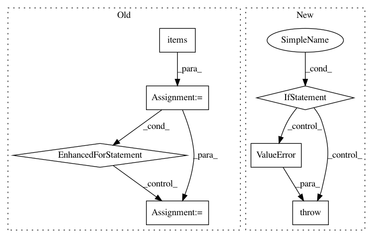

cc6085567559b008c831d07fcb7c1f53bea9a699,coremltools/converters/nnssa/frontend/tensorflow/load.py,,load,#Any#Any#,13
Before Change
ssa = graphdef_to_ssa(gd)
placeholder_shape = kwargs.get("placeholder_shape", {})
for k, v in placeholder_shape.items():
assert (k in ssa.functions["main"].graph)
ssa.functions["main"].graph[k].tfattr["_output_shapes"] = [v]
passes = [
delete_asserts, functionalize_loops, constant_propagation, cond_to_where,
remove_variable_nodes, fusedbatchnorm_rewrite, lstmblockcell_rewrite
]
After Change
required_plhd_nodes = [node for node in graph if
graph[node].op == "Placeholder"]
for name in required_plhd_nodes:
if name not in placeholder_shape:
raise ValueError("Shape of required input {} is not provided.".format(name))
graph[name].attr["_output_shapes"] = [placeholder_shape[name]]
passes = [
delete_asserts, functionalize_loops, constant_propagation,
In pattern: SUPERPATTERN
Frequency: 3
Non-data size: 7
Instances
Project Name: apple/coremltools
Commit Name: cc6085567559b008c831d07fcb7c1f53bea9a699
Time: 2019-08-30
Author: shuoxin_lin@apple.com
File Name: coremltools/converters/nnssa/frontend/tensorflow/load.py
Class Name:
Method Name: load
Project Name: Qiskit/qiskit-aqua
Commit Name: c7042ae38552e58476c048237cd80d3fe087cdd7
Time: 2019-02-13
Author: chenrich@us.ibm.com
File Name: qiskit/aqua/utils/entangler_map.py
Class Name:
Method Name: validate_entangler_map
Project Name: stellargraph/stellargraph
Commit Name: f86781c68cac46a283555471b3d7ca32ca16ccdf
Time: 2020-05-11
Author: Huon.Wilson@data61.csiro.au
File Name: stellargraph/core/convert.py
Class Name: ColumnarConverter
Method Name: _convert_single